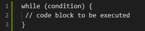
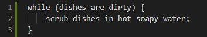
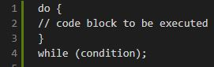
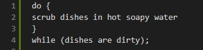
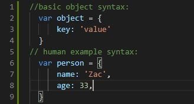
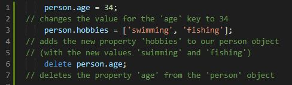
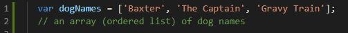
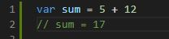
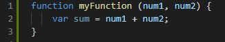
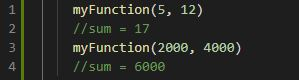

Technical Blog #2
10 September 2020
HTML & CSS
What's the difference?
If you were to think of a webpage as a human being, then the HTML would be the skeleton.
It is the bones and structure of your web page, with each element of your web page (each bone in a skeleton) being assigned a name (tag) to describe what it does (e.g. header).
This allows your browser to understand what it is reading and how to render it.
Browsers can render HTML on their own (the skeleton isn’t invisible) but we are capable of far more dynamic and beautiful things using CSS (think of CSS as the skin of a human body) and JavaScript (think of JavaScript as the brains of a human body).
Control Flow & Loops
A Simplified Explanation
Control Flow (sometimes called flow of control) is the order in which your code (think of your code as instructions) are executed or evaluated.
Most programming languages feature control flow statements which determine what section of code is run in a program at any given time.
One of the most common forms of a control flow statement is an if/else statement. An if/else statement is basically:
If *some condition* is met --> do *something*.
Or else (i.e. if *some condition* isn't met) --> do *something else*
e.g. If a dish is dirty --> wash the dish. Or else (i.e. if the dish is clean) --> put the dish away
Thus the if/else code decides what section of code should be run depending on whether or not *some condition* is met.
Without control flow, someone who is new to doing the dishes may start by putting them away, THEN rinsing them before finally washing the dishes in hot water & detergent (leaving you with soapy wet dishes that aren’t put away).
With control flow, we are able to assign an order for each step to be completed in:
the dishes will not be rinsed until they have been washed, and will not be put away until they have been rinsed.
A Loop is a sequence of statements which is specified once, but can be carried out multiple times in succession.
The body of a loop (the code inside the loop) can be executed a specific number of times, or once for each of a collection of items, or until some condition is met, or indefinitely.
The simplest type of loop is a while statement, which has the following syntax:

The while loop loops through the block of code as long as the specified code is true.
So the pseudocode (simple description of the function) for our dish-washing example would be:

Each time the dishes are scrubbed in hot soapy water, the loop will restart and the dishes will be assessed again to see if they meet the condition (of being dirty in this case).
If the condition is not met (i.e. the dishes are clean) then the loop will not execute.
A slight variation of the while loop is a do/while loop.
The loop will always be executed once, before checking if the condition is true, then (like a while loop) it will repeat the loop for as long as the condition is true.
The syntax is as follows:

So for our dish-washing example the pseudocode would be:

A do/while loop might suit us better in this example, as it means dishes will always be washed at least once (before their cleanliness is assessed and they are washed again as required).
The Document Object Model (DOM)
What is it and how do we interact with it?
The DOM is a programming interface for HTML and XML documents that represents web pages in a way that allows them to be manipulated by programs. As we have mentioned before, a web page can be summarized as follows:
- HTML defines the structure
- CSS provides the appearance/styling
- JavaScript deals with the interactivity (and everything else)
The DOM is like the glue that holds all these things together. Something that is written in JavaScript uses the DOM to access the document and its elements. The DOM is not a programming language, but without it the JS language wouldn’t have any model or notion of web pages, HTML documents, XML documents, and their component parts (e.g elements).
Accessing The DOM:
Different browsers have different implementations of the DOM, which exhibit varying degrees of conformance to the actual DOM standard, but every web browser uses some document object model to make web pages accessible via JavaScript.
One of the ways we access the DOM is through DevTools.
DevTools also assists us with testing and debugging websites and applications.
On Google Chrome the DevTools can be brought up using the F12 key (or ctrl+shift+i, or clicking the three dots in the top right corner and going into ‘More Tools’).
We can use DevTools to inspect specific elements on a web page (ctrl+shift+C or selecting the icon on the top left of DevTools).
Once we select an element, all the code that affects the selected element will be displayed, allowing us a behind-the-scenes look into how any specific element of any website is run.
As a result DevTools (and thus the DOM) are an invaluable tool for not only debugging our own code, but also for learning by looking at other people’s code and seeing how it functions.
Arrays & Objects
How do they differ and how do we access their contents?
Objects represent a special data type that is mutable (able to be changed) and can be used to store a collection of data rather than just a single value.
Arrays are a special data type that are also mutable and can also be used to store a list of values.
As a result Objects and Arrays can seem interchangeable, when in fact they are not.
The main difference between the two is that Objects are used to represent a thing in your code that has characteristics (properties), while Arrays create and store lists of data in a single variable.
If your data represents a single entity with named properties then you want an object.
If your data represents a group of entities of the same type/shape, or if the order of the data matters, you will likely want to use an array.
Objects:
Object properties consist of a key and a value:

Properties in objects can be accessed, added, changed or removed by either using dot or bracket notation.
To get the value of age, add a new property to our object or delete a property in our example person above we’d type:

Arrays:
Arrays are used whenever we want to create and store a list of multiple items in a single variable. Arrays are especially useful when creating ordered collections as it allows us to access items in the collection via their numerical position in the list. Just like with object properties, arrays can consist of strings, numbers, booleans, or any primitive data type (as well as other arrays or other objects). It is worth knowing that Arrays use zero-indexing, so the first item in an Array is item 0, the second is item 1 and so on. So for an example we can make an array of the names of our (dream) dogs:

To access the second item of our array ('The Captain' in this example) we would use:
Note: Technically 'Baxter' is the 0th item (remember zero-indexing), 'The Captain' is the 1st item, and 'Gravy Train' is the 2nd item, which is why dogNames[1] calls 'The Captain'
Functions
What are they and why are they useful?
Functions are blocks of code designed to perform particular tasks.
The code inside a function is executed (i.e. the code runs) when “something” invokes it, or calls it.
Functions are identified by the parentheses after them.
Functions can be extremely useful for performing a task multiple times using different inputs.
Some functions are built into JavaScript already (such as the methods of arrays, strings, numbers and other objects) but you can also create your own to do almost anything you can think of.
If we wanted to add two numbers together and assign them to a variable we COULD just write:

But what if we wanted to that multiple times with different numbers each time?
Rather than having to duplicate our code multiple times, we could just write a simple function to do the work for us!

Then, when we run the function we can input any two numbers each time and in return receive the sum of the two numbers from each instance:

This may seem like a simple example but remember that functions can be as complicated as you require.
The more complicated the function and more the times you use it means less repeated code for you to type.